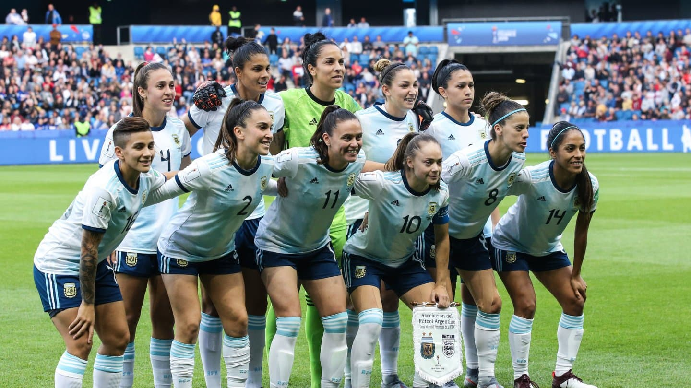
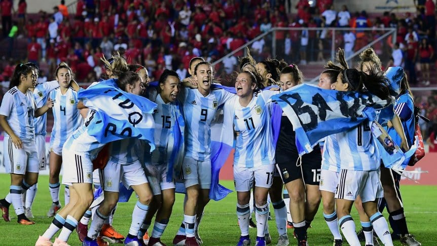

No soy más jugadora del Club Deportivo UAI Urquiza. Aca les cuento lo sucedido:
#FutbolFemeninoProfesional #FutFemProfesional #SeVaACaer


El reclamo de Macarena Sánchez, la profesionalización, el Mundial de Francia, los Juegos Panamericanos de Lima y los momentos que marcaron un antes y un después en el deporte. Un repaso de los hechos históricos y una lucha ganada por las mujeres.
nalizar el año del fútbol femenino implica necesariamente remontarse a dos hechos del 2018 que fueron claves para el desarrollo del 2019: El reclamo en la Copa América conocido como el Topo Gigio y luego el tercer puesto que le dio la chance a la Selección de jugar el repechaje ante Panamá para lograr a clasificación al Mundial de Francia.
Los momentos que marcaron un antes y un después en el fútbol femenino de Argentina y a nivel Mundial:
-Topo Gigio, donde comenzó a mostrarse lo invisible: Las jugadoras de la Selección Argentina posaron en la foto haciendo el Topo Gigio en la Copa América de Chile 2018, pidiendo “ser escuchadas”. Simplemente reclamaron derechos, tener ropa y canchas para entrenar, cobrar mínimamente viáticos, tener un espacio en AFA, y que sus reclamos sean escuchados.
-Repechaje y clasficación: Tras conseguir el tercer puesto en esa competencia, que además le permitió clasificar directo a los Juegos Panamericanos Lima 2019, la Selección disputó el repechaje ante Panamá para ganar un lugar en el Mundial de Francia.
El partido de ida, que se disputó a estadio lleno en la cancha de Arsenal de Sarandí, finalizó 4-0, con goles de Mariana Larroquette, Eliana Stábile en dos ocasiones y Yamila Rodríguez. Mientras que la vuelta, la Selección igualó 1-1 con gol de Florencia Bonsegundo y logró clasificar a la Copa del Mundo 12 años después.
Tras hacer un pequeño repaso de los dos hechos históricos del 2018, el 2019 empezó con un reclamo de Macarena Sánchez hacia el club UAI Urquiza y decidió intimar a la Asociación de Fútbol Argentina (AFA) y a su equipo para que regularicen no solo su situación laboral, sino de todas las mujeres que juegan al fútbol.
Enero: La delantera simbolizó la lucha por la equidad de género, la que encabezó un movimiento que revolucionó el fútbol femenino del país. Ella comenzó reclamando sus derechos como trabajadora y terminaron siendo derechos ganados para todas. Su caso explotó en las redes sociales y a nivel mediático, y la repercusión fue abismal, hasta que fue escuchada en AFA.

@Macasanchezj · Seguir
No soy más jugadora del Club Deportivo UAI Urquiza. Aca les cuento lo sucedido:
#FutbolFemeninoProfesional #FutFemProfesional #SeVaACaer